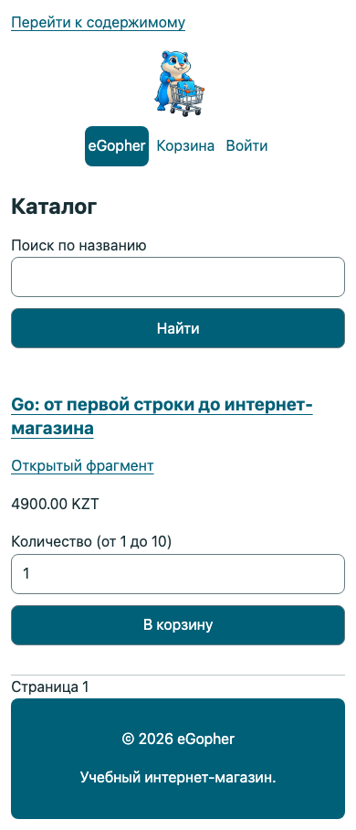
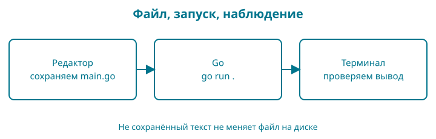

1. Рабочее место, которое можно проверить
В конце этой главы у вас будет папка проекта и терминал, в котором работает команда go version. Пока не нужно выбирать базу данных или оплачивать сервер. Сначала убедимся, что можем сохранять файлы и запускать инструменты.
Ориентир на экране
Снимок работающей контрольной точки 42 показывает итоговый интерфейс. В ранних главах мы будем приходить к нему постепенно; адреса, заказ и цены здесь учебные.

Тот же итоговый каталог на смартфоне: навигация и форма помещаются по ширине экрана.
Образ: свой рабочий стол
Представьте стол, на котором вы собираетесь написать письмо. На нём лежит папка, внутри — листы; у папки есть название. Если оставить письмо на соседнем столе, открытая перед вами папка его не получит. С программой происходит похожая путаница: вы исправили один main.go, а терминал запускает другой.
Наша опора — стол, папка, сохранённый лист. Рабочая папка объединяет файлы проекта. Текущая папка терминала определяет, где команда начинает работу. Сохранение переносит набранный в редакторе текст в файл, который прочитает инструмент Go. Редактор может показывать несколько проектов, поэтому взгляд на вкладку ещё не доказывает, что терминал открыт там же.
У образа есть граница: на компьютере команды могут принимать полный путь к чужой папке. Пока мы намеренно работаем из папки проекта. Нарисуйте прямоугольник с названием bookshop, а внутри — go.mod. Перед запуском показывайте пальцем: «Команду выполняю здесь». Это маленькая привычка, которая избавляет от долгих поисков не той ошибки.
Сначала целое
Наша работа будет устроена так:
| Где | Что вы делаете | Что получаете |
|---|---|---|
| Редактор | Пишете и сохраняете файл main.go |
Текст программы на диске |
| Терминал | Вводите go run . |
Go собирает и запускает программу |
| Терминал | Читаете ответ | Проверяете, совпал ли результат с ожиданием |
Сохранённый файл и открытая вкладка редактора — не одно и то же. Если вы изменили текст, но не сохранили его, команда может запустить предыдущую версию. Эту причину стоит проверять прежде, чем переписывать программу.
Терминал — программа, принимающая команды. Оболочка внутри него разбирает эти команды. В macOS вы обычно встретите zsh, в Linux — bash, в Windows будем использовать PowerShell. Там, где команды различаются, книга покажет оба варианта.
Установите Go
Откройте официальную страницу установки. Выберите свою операционную систему и процессор. Для Windows используется установщик MSI, для macOS — PKG; на Linux следуйте инструкции для архива вашей архитектуры. Не вставляйте в терминал команды удаления старой установки, если не понимаете, какой каталог они затронут.
Материалы этого рабочего выпуска проверяются на Go 1.27.1. Ваша версия указана в выводе команды, а не в названии скачанного файла. После установки закройте терминал и откройте новый: так он получит обновлённые настройки поиска программ.
Введите только команду, без символов приглашения вроде $ или >:
go version
Форма ответа:
go version go1.27.1 darwin/arm64
Последняя часть зависит от компьютера. darwin означает macOS, arm64 — архитектуру процессора. На Windows или Linux она будет другой. Здесь важно, что вы получили ответ программы Go, а не сообщение «команда не найдена».
Если Go установлен раньше, не удаляйте его наугад. Сначала посмотрите версию и сверьтесь с инструкцией обновления. Работающий чужой проект может зависеть от своего набора инструментов.
Подготовьте папку
Выберите место для учебных проектов, к которому у вас есть доступ. Не создавайте новый магазин внутри другого проекта. Откройте терминал в выбранной папке и выполните:
mkdir bookshop
cd bookshop
Эти две команды подходят и для PowerShell, и для bash/zsh. Первая создаёт папку, вторая делает её текущей: следующие команды будут работать относительно неё.
Если bookshop уже существует, сначала посмотрите, что внутри. Для чистого начала можно выбрать другое имя, например bookshop-study; тогда используйте его и в команде cd.
Проверьте, где вы находитесь. В macOS/Linux:
pwd
ls
В PowerShell:
Get-Location
Get-ChildItem
Первая команда показывает путь, вторая — содержимое. Не надо добиваться точного совпадения пути с книгой: у каждого своя домашняя папка. Важно увидеть выбранную вами папку bookshop.
Откройте её в редакторе через меню открытия папки. Подойдёт редактор обычного текста, который сохраняет UTF-8. Если используете VS Code, открывайте всю папку, а не случайный файл из соседнего проекта. Для первых глав дополнительные расширения необязательны.
Дайте проекту имя
В терминале внутри bookshop выполните один раз:
go mod init example.com/bookshop
Появится go.mod. Модуль — группа пакетов Go с общим описанием версии и зависимостей. Пока достаточно понимать: этот файл обозначает корень нашего проекта. Запись example.com/bookshop служит именем учебного модуля; для этого упражнения не нужно покупать домен или создавать сайт по такому адресу.
Код книги связан с репозиторием dake-edu/gopher-shop. Контрольные точки находятся в book/examples/; их имена модулей отражают путь в репозитории. Для собственного проекта мы используем учебное имя example.com/bookshop, чтобы отличать его от готовых примеров.
Не редактируйте go.mod ради буквального совпадения с изображением в чужом уроке: версия в нём зависит от инструмента, который его создал. В комплекте книги лежат самостоятельные контрольные точки со своими готовыми go.mod; для них повторный go mod init не нужен.
Если не получилось
| Симптом | Что проверить |
|---|---|
go не найден |
Установка завершена? Открыт новый терминал? Найден ли каталог Go через PATH? |
go.mod already exists |
Модуль уже создан; повторная инициализация не нужна |
| Отказ в создании папки | Выберите доступную папку пользователя |
| Редактор показывает другие файлы | Сравните открытую папку с выводом pwd или Get-Location |
PATH — список папок, где оболочка ищет исполняемые программы. Он похож на список адресов доставки, но саму программу не устанавливает. Если адрес записан верно, а файла по нему нет, поиск всё равно не сработает.
Опорные пункты: команда состоит из частей
В go mod init example.com/bookshop пробелы отделяют имя программы go, подкоманду mod, действие init и имя модуля. Слеш / здесь является частью имени модуля, а не командой перехода в папку. В go run . последняя точка — отдельный аргумент «текущий пакет».
Символы приглашения терминала ($, >, иногда %) перед командой не набирают. Они принадлежат оболочке. Круглых или фигурных скобок в этих командах нет: это команды инструменту, а не исходный код Go.

Восстановите по памяти. Закройте пример и назовите три места: где редактируем, что запускаем, где проверяем результат. Если путаются путь и имя модуля, вернитесь к выводу текущей папки и откройте go.mod.
Разминка
Предскажите. Если создать файл в папке A, а команду запустить из папки B, обязана ли команда увидеть этот файл?
Заполните. Какая команда меняет текущую папку на bookshop?
Почините. Редактор сохранил файл в bookshop-old, а терминал открыт в bookshop. Как проверить расхождение, не переустанавливая Go?
Задание
Обязательное. Создайте рабочую папку и модуль. Сохраните в environment.txt вывод go version и путь к папке. Проверьте в редакторе, что рядом существует go.mod.
На своих данных. Назовите папку по-своему и повторите проверку пути. Имя папки и имя модуля не обязаны совпадать.
По желанию. Найдите путь к установленной команде Go: command -v go в bash/zsh или Get-Command go в PowerShell.
Ответы и самопроверка
Команда работает в своей текущей папке и не обязана искать файл в соседней. Для перехода используется cd bookshop. Чтобы найти расхождение, сравните путь терминала с местом сохранения файла в редакторе.
Вы готовы двигаться дальше, если можете объяснить, где лежит проект, показать go.mod и получить версию Go. Следующая глава даст этой папке первую программу.